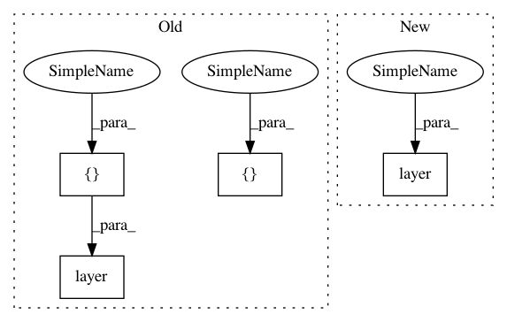

d7e12cb9dece9bfc7108d29ddd4614c86ecb70bf,tests/layer/test_sort_pooling.py,,test_mask,#,90
Before Change
layer = SortPooling(k=2)
data_out = layer([data, mask])
assert np.array_equal(data_out, data_sorted)
mask = np.array([[True, True, False]])
data_sorted = np.array(
[[3, 4, 0], [1, 2, -1], [0, 0, 0], [0, 0, 0]], dtype=int
).reshape((1, 4, 3))
layer = SortPooling(k=4)
data_out = layer([data, mask])
assert np.array_equal(data_out, data_sorted)
After Change
layer = SortPooling(k=4)
data_out = layer(data, mask=mask)
assert np.array_equal(data_out, data_sorted)
In pattern: SUPERPATTERN
Frequency: 3
Non-data size: 4
Instances
Project Name: stellargraph/stellargraph
Commit Name: d7e12cb9dece9bfc7108d29ddd4614c86ecb70bf
Time: 2020-04-30
Author: Huon.Wilson@data61.csiro.au
File Name: tests/layer/test_sort_pooling.py
Class Name:
Method Name: test_mask
Project Name: stellargraph/stellargraph
Commit Name: d7e12cb9dece9bfc7108d29ddd4614c86ecb70bf
Time: 2020-04-30
Author: Huon.Wilson@data61.csiro.au
File Name: tests/layer/test_sort_pooling.py
Class Name:
Method Name: test_mask
Project Name: tensorflow/models
Commit Name: 570d9a2b06fd6269c930d7fddf38bc60b212ebee
Time: 2020-07-21
Author: hongkuny@google.com
File Name: official/nlp/modeling/layers/attention_test.py
Class Name: CachedAttentionTest
Method Name: test_masked_attention
Project Name: tensorflow/models
Commit Name: 36101ab4095065a4196ff4f6437e94f0d91df4e9
Time: 2020-07-21
Author: hongkuny@google.com
File Name: official/nlp/modeling/layers/attention_test.py
Class Name: CachedAttentionTest
Method Name: test_masked_attention